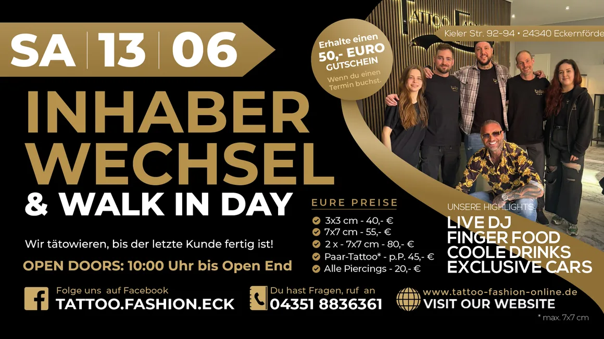

NYE EJERE HOS TATTOO FASHION ECKERNFÖRDE
Alle oplysninger om walk-in-dagen og tilbuddet i Eckernförde.
Hver idé har en historie. Oplev menneskene, kunsten og passionen bag Tattoo Fashion.
VORES HISTORIEHer finder du de seneste nyheder, arrangementer og opdateringer fra Tattoo Fashion.

Alle oplysninger om walk-in-dagen og tilbuddet i Eckernförde.

Carbonpeeling og FashionSmile – nye skønhedsbehandlinger hos Tattoo Fashion Flensborg.

Dørene åbner kl. 10.00, et gavekort på 50 euro ved tidsbestilling og flere tilbud på stedet.